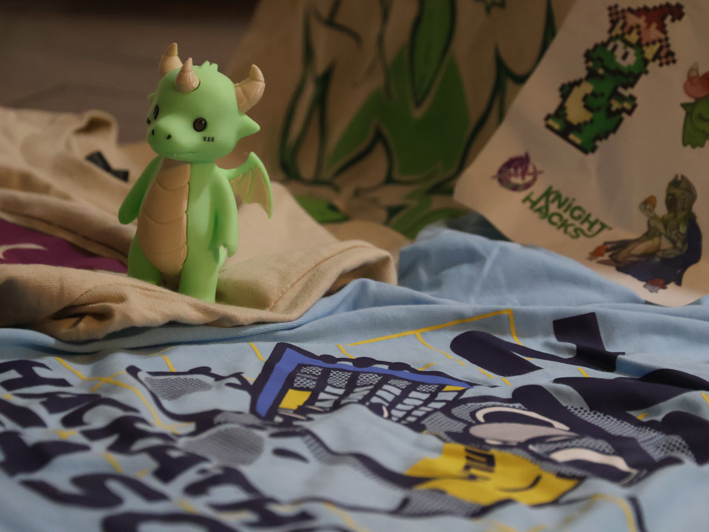

Planning a project two weeks before the hackathon? It's a good idea, but you may want to focus on the more critical and technical aspects of your project.
I finished my first ever hackathon on October 11 with Knight Hacks. It was an incredible experience because the atmosphere of a hackathon is very different compared to normal coding classes or working independently. My team's project turned out pretty well, and we received some good comments from the judges afterward. However, the story behind this project is shocking because it was not the project we originally planned to build. We wanted to create an app using the LinkedIn API, but I made the mistake of not carefully reading the usage permissions. The LinkedIn API is strictly limited to companies and organizations. My team only learned this information when our project was halfway finished, and we were extremely frustrated as we discovered more unpromising details.
Thankfully, we did not fail the hackathon miserably, even though we had to build a completely different project. This experience highlighted one of the issues I should have addressed better to improve my overall hackathon experience.
Also, I did not win any prizes, and I did not make many connections during the Knight Hacks hackathon. I'm just writing this as someone who made mistakes on his first attempt so that future newcomers will be less likely to have a frustrating hackathon experience and make similar mistakes.

Lenny, Knight Hacks' mascot, and other merchandise.
Please read the API documentation very carefully! You don't want to fail your hackathon just because the APIs you are using are not permitted.
Bring noise-canceling headphones if you don't want to hear the snores of fellow participants. You don't need to sleep in designated resting rooms either; just find a comfortable spot, as long as you bring basic sleeping equipments like a blanket and pillow.
Non-technical users are surprisingly the main demographic for tech products. What does that mean? This means your projects should be so easy to use for non-technical users that they become vital to their lives and to the industry. You don't want your projects known only by fellow tech people; you want to go mainstream.
My advice would be to take a look at winning hackathon projects. It is one of the most direct ways to get an idea of what types of projects can win. There is one thing that winning hackathon projects always have in common: they are life-changing for users and make their lives easier, especially for those with impairments or disabilities.
The sooner, the better. Similar to Tip #3, you will have more time to learn what each sponsor expects, which gives you a better starting point to build a relevant, useful use case.
There might be resume check sessions or career fairs during the hackathon. Take advantage of every moment the sponsors are around and are available to see your resume and answer your questions.
Participating in hackathons is not only about making a project; it is also a good opportunity to meet a good amount of people doing the same thing and pursuing the same field. The number of hackathon participants varies, but one thing always remains: they are here to be creative with tech and programming. Oh, and don't forget to ask for their LinkedIn if possible, and join all the social events as well.
Chances are your team's project is posted on GitHub, and every new commit from each member should be done together within the same repository. Learn how to push your own commit, pull others' new commits, and stash your own in case your commit is cluttered. Git could be very confusing to deal with, but it should not be the thing that pushes your team away from an efficient collaboration effort.
Please double check the parking rules mentioned in the hacker's guide if you are going to a hackathon held at a university to prevent being ticketed and to quickly access the hackathon venues.
Hackathons are fun, but they could be confusing for first-timers as there are tons of other things happening besides just coding. Good preparation should help avoid making mistakes that negatively affect your hackathon experience. Good luck to those who are going to one!